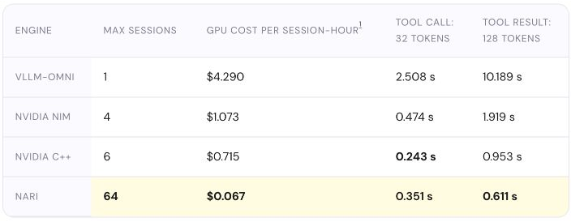
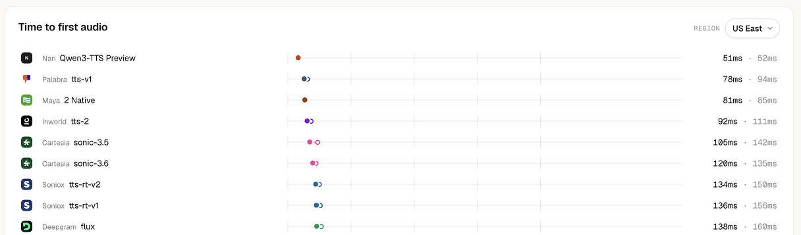
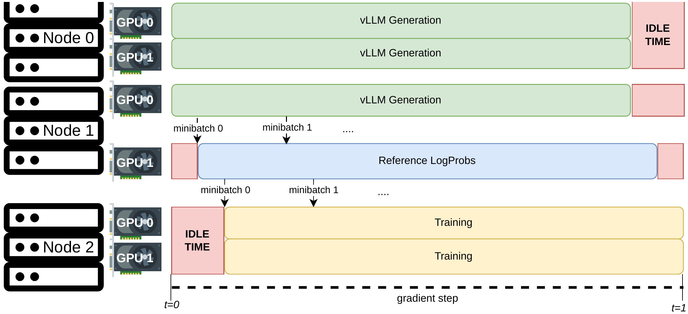

Nari Labs AI Engineer
Apr 2026–PresentDeveloped and trained a causal avatar video model, built optimized inference engines for TTS and full-duplex speech, and developed and operated a streaming speech API.
I’m an AI Engineer at Nari Labs and a former co-founder & CTO of Weavel, a Y Combinator S24 company. My work spans causal video model training, real-time speech inference, and LLM developer tools.
I’m interested in understanding model architectures and improving the computation, memory, communication, and scheduling that make them practical.

I rebuilt the runtime and scheduler to serve 80 PersonaPlex 7B conversations or 64 Nemotron VoiceChat 11B conversations on a single H100.
These models consume an audio frame and produce the next one every 80 ms. Missing that deadline can empty the playback buffer and interrupt the conversation. High average throughput is insufficient: each live session must keep up with the audio clock.
The vLLM-Omni paths I tested did not organize this workload around a shared audio clock. Sessions triggered small batches and repeated CPU–GPU synchronization. Tool processing also followed the audio cadence, so generating even a short tool-call string could take seconds. The GPU was underused, while each additional conversation increased overhead.
PersonaPlex supported 80 simultaneous sessions with no missed 80 ms deadlines or dropped frames in a 10-minute, 3,000-token-context load test. A 30-minute session-turnover test checked session lifecycle handling. Nemotron supported 64 sessions, including 16 using tools, without missed audio deadlines or dropped frames.
Hardware: one H100 SXM 80GB. Nemotron comparisons used uninterrupted playback with a 160 ms buffer. The $0.067 figure assumes full utilization and an H100 price of $4.29/hour; engine precision differs as documented in the linked comparison.

I built a scheduler around Qwen3-TTS’s internal modules and served it through a streaming API, achieving #1 latency on Speko and #2 on Coval.
Qwen3-TTS generates speech in three stages: Talker produces speech codes, Code Predictor completes them, and Codec turns them into audio. The modules differ in compute cost, repetition, and batching efficiency. Running a long sequence of jobs for one request can block another request’s first audio or next playback chunk.
New requests need their first audio quickly; ongoing requests need each subsequent chunk before playback runs out. I therefore needed a scheduler that could see all three modules’ pending jobs and dependencies, prioritize urgent work, and still batch similar operations efficiently.
| Benchmark | Median first audio | Latency rank |
|---|---|---|
| Speko · Aug 30, 2026 | 51 ms | #1 |
| Coval · Sep 14, 2026 | 63 ms | #2 |
Coval also measured a 3.8% word error rate, ranking #1 for TTS in that snapshot. In a separate load test on one H100 at 10 requests per second, I kept p95 first-audio latency below 50 ms with complete-text input and streamed audio output.
The local load test and external endpoint benchmarks use different workloads and network conditions. Rankings above refer to the dated snapshots.
I developed a 2B model that generates talking and listening avatar video from text, an image, and incoming audio, and reduced teacher training step time by 37%.
In a live conversation, future speech is unavailable. The model must generate the next video chunk using previous video and the current inputs. Small model size mattered for both generation speed and the cost of serving each conversation; the target was real-time operation on a single H100.
A causal model also feeds its own generated video back into the next step. Training only on clean reference video leaves a mismatch at inference time, allowing errors to accumulate during longer generation. The training process needed to address both generation quality and this feedback loop.
| Metric | Baseline | Optimized |
|---|---|---|
| Training step time | 18.34 s | 11.55 s · 37% reduction |
| Model FLOPs utilization | 23.3% | 37.0% |
I also reduced Self-Forcing DMD iteration time from 15.634 s to 10.226 s, a 34.6% reduction.
Teacher comparison: 8× H100 SXM 80GB, global batch size 64, and 25,200 video tokens. I owned model development and training; data preparation was handled by a separate teammate.

I replaced CPU-mediated weight transfers in Red Hat’s open-source GRPO framework with direct GPU communication, reducing 7B synchronization from 224.06 s to 0.256 s.
GRPO is a reinforcement learning method that updates a model using rewards for several generated responses. Separating generation and training onto different GPUs allows the two workloads to overlap, but generation and log-probability workers must repeatedly receive the trainer’s latest weights.
The original transfer path copied GPU weights to CPU memory, serialized them through Ray’s Object Store, and copied them back to the destination GPU. Larger models spent increasingly long waiting for that path. I focused on eliminating those intermediate copies.
| Model | Ray Object Store | NCCL | Speedup |
|---|---|---|---|
| Qwen2.5 0.5B | 13.69 s | ~0.18 s | 74.3× |
| Qwen2.5 3B | 92.12 s | ~0.36 s | 256.7× |
| Qwen2.5 7B | 224.06 s | 0.256 s | 874.1× |
Development used an 8× A100 80GB node; the 7B benchmark used four GPUs. Speedups measure the weight synchronization stage.
Developed and trained a causal avatar video model, built optimized inference engines for TTS and full-duplex speech, and developed and operated a streaming speech API.
I co-founded Weavel to build tools and products for LLM developers. We raised pre-seed funding from Krew Capital and were selected for Y Combinator S24. I worked across Seoul and San Francisco.
With AttentionX, I worked on parameter-efficient fine-tuning of InstructBLIP and the importance of individual Q-Former and LLM sublayers. My work included visual encoder and layer-wise tuning controls, comparative experiments, and result analysis.
Atlas implementation & RADLADS distillation. Independent work spanning a paper-based memory model implementation, GPU computation and memory optimization, model training, distillation, and evaluation. Atlas · RADLADS
1B LLM pretraining. Data preparation, distributed training, and bottleneck analysis for a SmolLM-style Transformer, trained on 10.49B tokens using 8× A100 40GB GPUs. Training results
B.S. in Computer Science and Engineering · Mar 2018–Aug 2024
GPA: 3.51 / 4.3
Undergraduate research in 2022: language modeling for natural-language mathematical problems, and NeRF / 3D reconstruction.